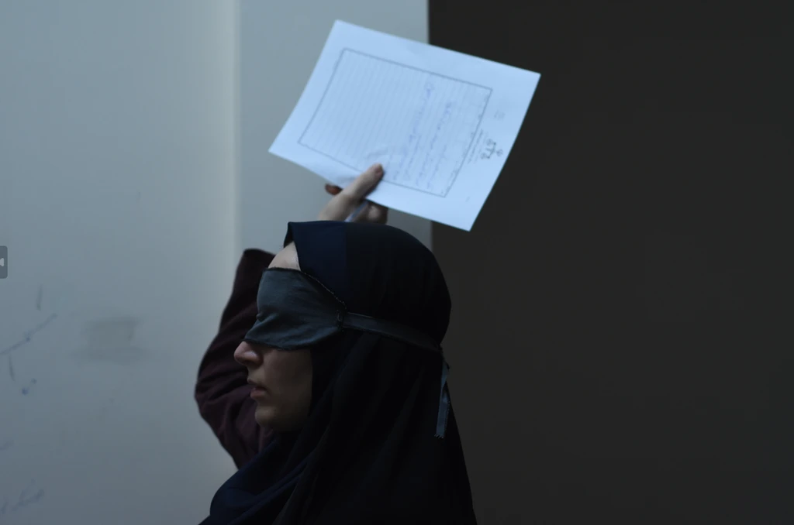

pure terror.
Covering the Woman Life Freedom movement directly in the first act and then indirectly with the mini horror flick was so damn smart. The father is initially portrayed as a principled man whose worst crime is complicity, but by the end, he becomes a physical embodiment of the tyrannical government that he works for. The two daughters are initially shielded from the violence in the streets, but turns out the evil lurks within the walls of their own house. Not only does this make for a banging third act, but it also sends a strong message about how easily a coward can get exploited by a corrupt system.
The three lead women are all such well-written characters (maybe not the youngest) but the mom steals the show for me. Starting out she is an oppressive matriarch in all manners but her humanity is forced to come out by the end when the dad loses his shit. Though unlike him, we could see her true love for her daughters from the start so her character progression comes off very authentic. Her weakness at the end allows for the strength of the daughters to take center stage for a strong finale.
I do feel like the film could have done a lot more visually, and the few things it did go for kind of missed the mark. The slo-mo closeups of the dad's face kinda made the film look a bit amateurish but luckily there were only a few of these experimental shots. Overall the strength of the last act is enough for me to ignore anything I feel the movie lacked stylistically.
such a powerful and innovative film. easily one of the best of 2024.